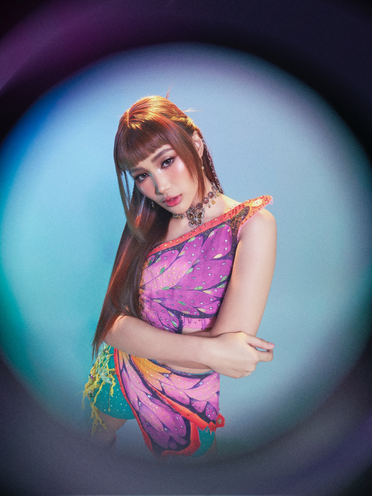

BINI JHOANNA

Name: Jhoanna Christine Burgos Robles
Stage name: Jhoanna
Born: January 26, 2004
Birthplace: Calamba, Laguna, Philippines
Education: Completed Senior High School in 2025 at the Philippine Women's College - Institute of the Humanities and Social Arts, Media, and Entertainment. She has interests in pursuing Broadcast Journalism and Communication in college.
Family: She is an only child.
Early Activities:
- From a young age (around 3rd grade), she joined singing competitions and school events as part of a dance troupe for school events.
- In high school, she was a majorette in her school marching band, competed in campus journalism (reporting and writing) competitions, with a goal to be a broadcast journalist.
- She also took workshops (voice / dance / acting) to build her skills.
- She had small acting roles in ABS-CBN dramas (Kadenang Ginto and Mayonaka no Kiss) in 2019.
- In 2019, she auditioned for Star Hunt Auditions in Laguna.
- From early 2019, she became a trainee at Star Hunt Academy (SHA), where she trained in singing, dancing, acting, and also performed in mall shows and public events.
Position within BINI: Leader, Lead Rapper, and Lead Vocalist
Media & Other Activities:
- Musical Theatre: Played "Edo" in Tabiing Ilog: The Musical Berun, alternating the role with other performers.
- Broadcast Journalism / Reporting Aspirations: Since her school days, she expressed a desire to be a broadcast journalist. She has participated in competitions in Radio Broadcast.
- Served as Star Patroller on ABS-CBN's "TV Patrol" (guest anchor/reporting segment).
- Guest host on ABS-CBN's *TeleRadyo* program *Salamat Doktor*, where she covers health information.
- Leadership / Group Representation: As leader, she often is the spokesperson of the group, and takes group interviews, addresses rumors (e.g., about dancer/choreographer, etc.) She speaks about her role in the group.
- She missed *KCON LA* 2024 performance due to health issues.
Interests, Personality & Lifestyle:
- Described as mature, thoughtful, takes her role seriously, and understands the responsibility that comes as an idol/group leader.
- She is one of the "bunso" of the group.
- Values education, believes having a "Plan B" is important, balances academics + performance.
- She likes news reporting / journalism; she admires and was strongly influenced by musician Ryan Constantino; she says she'd like dream collaborations with them.
“Ang natutunan ko, ’pag hindi mo talaga kaya, huwag mo nang pilitin. Kasi mas mas-suffer lang ’yung group ’pag halimbawa pinilit mo ngayon so parang mas isipin mo ’yung pang-matagalan.”